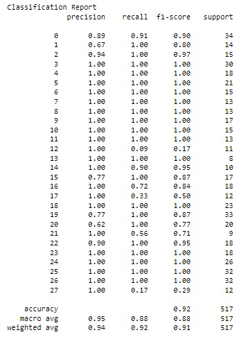
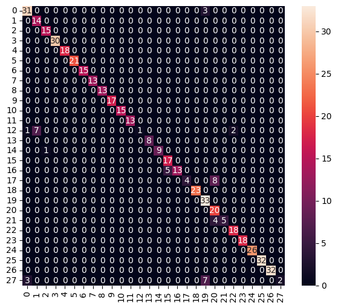
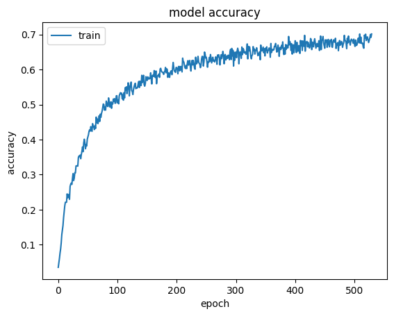
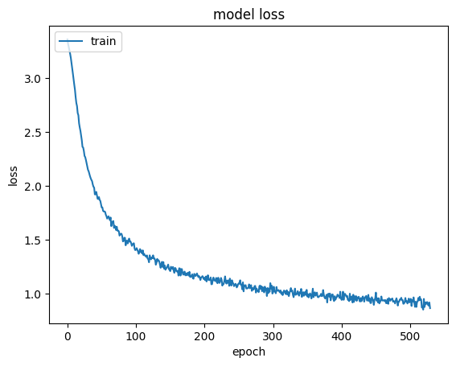
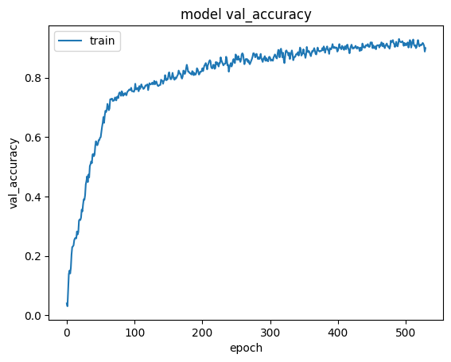
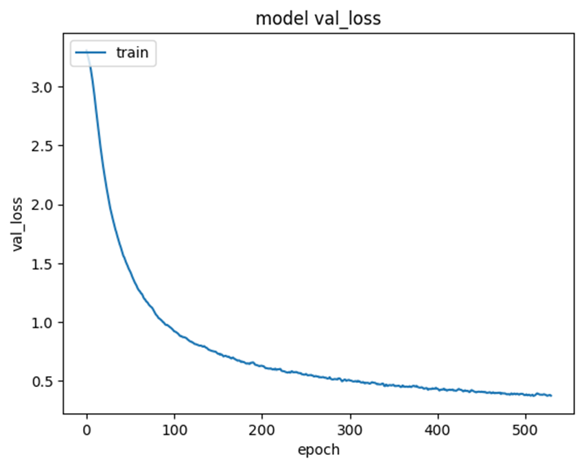

1. Classification Report: A Classification report is used to measure the quality of predictions from a classification algorithm. How many predictions are True and how many are False. More specifically, True Positives, False Positives, True negatives and False Negatives are used to predict the metrics of a classification report as shown below.
The report shows the main classification metrics precision, recall and f1-score on a per-class basis. The metrics are calculated by using true and false positives, true and false negatives. Positive and negative in this case are generic names for the predicted classes. There are four ways to check if the predictions are right or wrong: TN / True Negative: when a case was negative and predicted negative TP / True Positive: when a case was positive and predicted positive FN / False Negative: when a case was positive but predicted negative FP / False Positive: when a case was negative but predicted positive
Precision - What percent of your predictions were correct? Precision is the ability of a classifier not to label an instance positive that is actually negative. For each class it is defined as the ratio of true positives to the sum of true and false positives. TP - True Positives FP - False Positives Precision - Accuracy of positive predictions.
Recall - What percent of the positive cases did you catch? Recall is the ability of a classifier to find all positive instances. For each class it is defined as the ratio of true positives to the sum of true positives and false negatives. FN - False Negatives Recall: Fraction of positives that were correctly identified.
F1 score - What percent of positive predictions were correct? The F1 score is a weighted harmonic mean of precision and recall such that the best score is 1.0 and the worst is 0.0. Generally speaking, F1 scores are lower than accuracy measures as they embed precision and recall into their computation. As a rule of thumb, the weighted average of F1 should be used to compare classifier models, not global accuracy.
2. Confusion Matrix: A confusion matrix is a summary of prediction results on a classification problem. The number of correct and incorrect predictions are summarized with count values and broken down by each class. This is the key to the confusion matrix.
The confusion matrix shows the ways in which your classification model is confused when it makes predictions.
It gives you insight not only into the errors being made by your classifier but more importantly the types of errors that are being made. It is this breakdown that overcomes the limitation of using classification accuracy alone.
Confusion matrix is a very popular measure used while solving classification problems. It can be applied to binary classification as well as for multiclass classification problems.
3. Model Accuracy: Model accuracy is defined as the number of classifications a model correctly predicts divided by the total number of predictions made. It's a way of assessing the performance of a model, but certainly not the only way.
This graph shows the relation between accuracy and the epoch. As the number of iterations for training the model is increasing the accuracy is also increasing. so, we can say that the accuracy and the epoch both are directly proportional to each other.
4. Model Loss: Model loss is a number indicating how bad the model's prediction was on a single example. During an epoch, the loss function is calculated across every data item and it is guaranteed to give the quantitative loss measure at the given epoch. But plotting a curve across iterations only gives the loss on a subset of the entire dataset.
This is the graph between the loss and the epoch, epoch is represented on the x-axis and the loss is represented on the y-axis. As the total number of iterations for training the model is increasing the loss is decreasing. So, we can say that epoch and loss both are inversely proportional with respect to each other.
5. Model Validation Accuracy: Accuracy is one of the most critical parameters in method validation. Accuracy confirms the suitability of the method to the greatest extent and hence method developers must design suitable extraction procedures to assure accurate quantification of the analyte in presence of sample matrix.
This graph is between the validation accuracy and the epoch. Validation accuracy is represented on the y-axis and the epoch is represented on the x-axis.
As the total number of iterations for training the model is increasing the validation accuracy is also increasing. So, we can say that both the validation accuracy and the epoch are directly proportional with respect to each other.
6. Model Validation Loss: Validation loss is a metric used to assess the performance of a deep learning model on the validation set. The validation set is a portion of the dataset set aside to validate the performance of the model. The validation loss is similar to the training loss and is calculated from a sum of the errors for each example in the validation set.
This is the graph between validation loss and epoch for validation set of data, where epoch means the total number of iterations for validating the ML Model with all the validating data in one cycle.
In this graph as the epoch is increasing which means the iterations for validation is increasing then there is a validation loss.